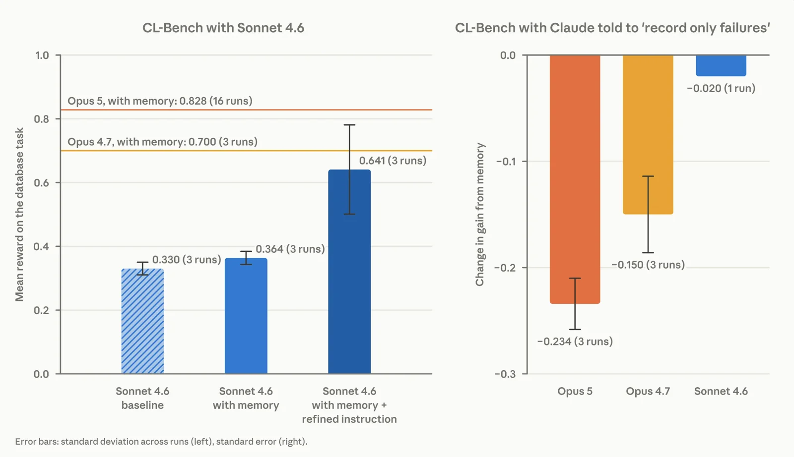
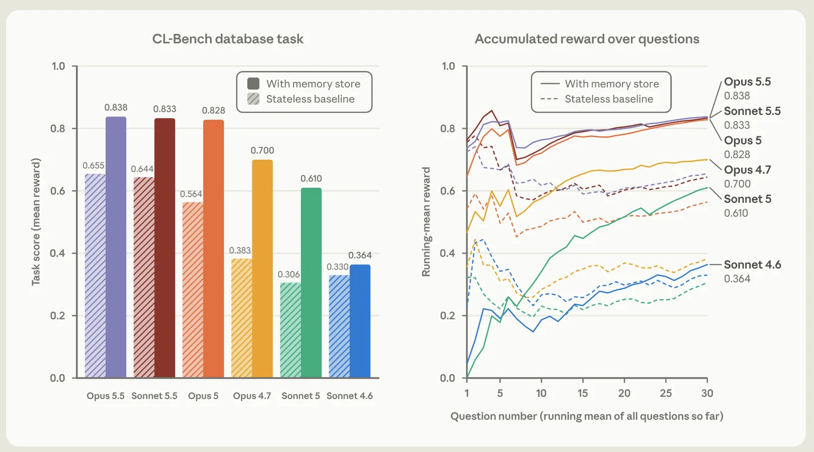
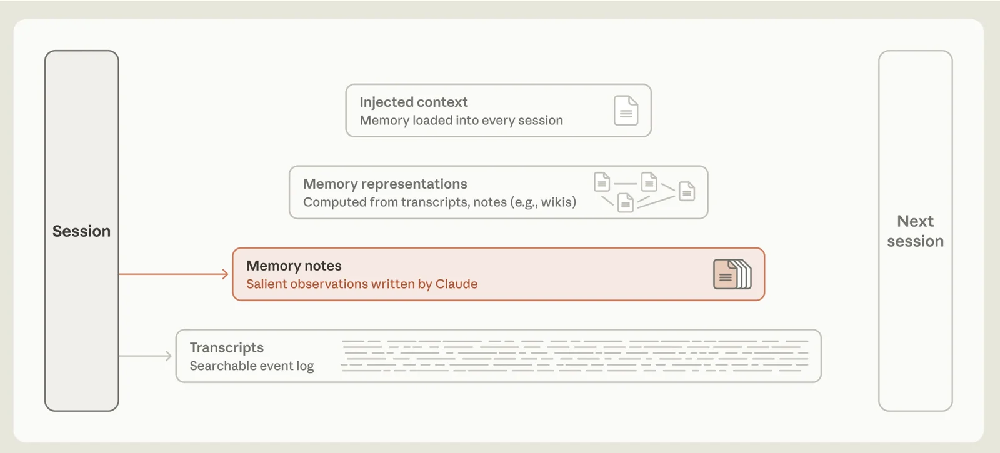
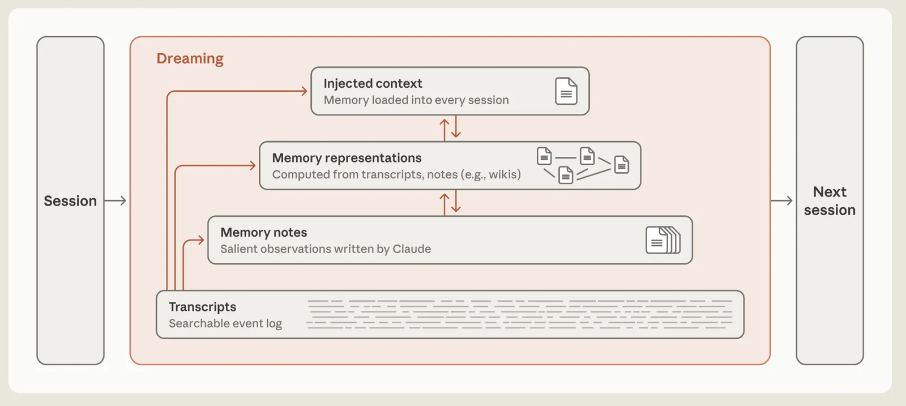

1 · 核心觀念
哪些事值得記，怎麼記才不會害你
七章照記憶的四層排，由下往上。最下面是原始紀錄（transcripts），往上是 agent 寫的筆記（memory notes）、從筆記整理出來的結構（memory representations），最上面是每次真的放進 context 的那一小份（injected context）。這樣排，是因為後一層建在前一層上：沒有原始紀錄，筆記錯了就沒有東西可以對；沒有筆記，就沒有東西可以整理和取回。第 5 章講一次動到好幾層的操作（整理、遺忘、量測），第 6 章講安全，最後一章是需要時再查的目錄。這堂和 L6〈Agent Reliability〉來自同一份 slides（9/28），依觀念拆成兩堂；沒讀過 L6 也讀得懂，用到它的地方會連過去。四層的分法，和 session 之間怎麼整理記憶的幾節，依 Anthropic 2026-11 的研究文〈The components of agent memory〉。
1Transcripts：原始紀錄留著，上層寫壞了才能重做
這一章先講 memory 為什麼要小心，再講它由哪四層疊成，最後講最下面的一層 transcripts，也就是每個 session 的原話。結論是章名那一句：原始紀錄留著，上面幾層寫壞了才能重做。
Agent 會出錯。L6〈Agent Reliability〉講的是一個 run（agent 從接到任務到停下來的一次執行）裡的錯：model 讀錯、推錯，錯的結論只存在 context（每一次送進 model 的全部文字）裡。開一個新的 session（一次新的對話），context 從空的開始，這些錯就不見了；改壞的檔案還在，但那是 L6 用 checkpoint（驗證過才存的存檔點）退回的事。Memory 讓錯的資訊跨過 session 之間這條界線：agent 把一筆資訊記下來，它記下時就錯，或是後來過期了，之後每個新的 session 都會讀回來照做。「先看這裡」的例子是過期的那一種：4 月記下的「用 vLLM」，6 月專案換成 SGLang 之後就不成立了，7 月的 session 還是讀到它。L2〈記憶〉講過機制，model 沒有狀態，記得的每件事都是 harness（跑 agent、替它組 context 的那層程式）搬進來的：
所以 memory 有兩個成本。第一個是租金：讀進來的每一條，之後每一圈（harness 每呼叫一次 model 叫一圈）都要重送（前情），多花的是 token 和時間，而且看得到。第二個是記錯，代價大得多：agent 會照著錯的事去做，沒有人報錯，下一個 session 還會再讀到同一條。
前情Context 與它的代價（L4）：每一條記憶都要每圈重送
Context 是每一次送進 model 的全部文字：system prompt（harness 每次放在最前面的固定指示）、tool 定義（tool 是 harness 能替 model 執行的動作，例如讀檔、跑指令；定義是寫給 model 看的說明）、對話歷史、tool 結果（tool 執行後的輸出）。它的長度有上限，這個上限叫 context window；上面那張圖用這個詞指 context 本身。L4〈Context 的成本〉講過三種代價：
- 錢。Model 的 API 照送進去的 token 數計費，而 context 每一圈整份重送：一條 2,000 token 的記憶，送 50 圈就要付 100,000 token 的錢。
- 延遲。Prompt 越長，prefill（model 開始回答前先讀完整個 prompt 的階段）越久。
- 注意力。Window 越滿，model 越難找回中間的資訊。
L4〈Context 管理〉的四種策略，在 memory 上一樣適用：
- Admission，在門口把關。不是每條記憶都讀進來，先過濾，再取最相關的幾條（叫 top-k，第 4 章）。
- Offloading，放在外面，要用再讀。每個 session 都讀進 context 的，只放一份索引（一行指向一條記憶的清單），每條記憶的內容要用再讀（第 3 章；Claude Code 的索引檔叫
MEMORY.md）。 - Transformation，用規則刪掉舊的。過期的記憶標成失效，不再讀進來（第 5 章）。
- Compaction，讓 LLM 寫摘要。把好幾條合成一條，會丟資訊，也可能把推測寫成事實（第 3 章）。
同一件事有四種存法。開頭那張圖的 memory store 裡，放的不只一種東西。一件事決定要記之後，這一條要存哪些東西是最難反悔的決定：寫入時沒存的，之後補不回來。先看同一件事的四種存法，用的是「先看這裡」例子裡 6 月的那一步（第 2 章會說這類事重讀就有、不必記；這裡借它示範，是因為它夠短，四種存法的差別一眼看得出來）：專案把 serving（把 model 架成一個服務、接請求回答的那一層）從 vLLM 換成 SGLang（兩者都是做這件事的程式，叫 LLM serving engine，Part II 會講）：
# 1 原始事件（raw episode，一段互動的原文）：什麼都沒丟，但大、重複，讀進 context 很貴。留著當來源
Episode 28, 2026-06-12, user: "We moved serving from vLLM to SGLang."
# 2 摘要（summary）：最省 token，適合常駐。丟掉過程、以前的值、為什麼
Uses SGLang for model serving.
# 3 結構化狀態（structured state）：精確查一個值。schema 沒有的事實存不進去
{"serving_engine": "SGLang", ...}
# 4 知識圖（knowledge graph）：要問「什麼時候變的」。寫入要先抽實體，抽取會出錯
(Project) --USES--> (SGLang) valid_from: 2026-06
(Project) --USES--> (vLLM) valid_from: 2026-04, valid_to: 2026-06名詞Knowledge graph 與結構化狀態：兩種「有形狀」的記憶
結構化狀態是一張固定欄位的表：serving_engine = SGLang、timezone = Asia/Taipei。查詢快、不會含糊，但欄位要事先定好。
Knowledge graph 把事實存成節點和邊：「專案 X」—使用—「vLLM」，每條邊可以帶時間和來源，也能順著邊找相關的事實。代價是寫入時要先從文字裡抽出節點（實體）和邊（關係），這一步通常靠 LLM，會出錯。第 7 章的 Graphiti 就是這種 store。
四種格式裡，第二種（摘要）的問題最常見：摘要丟掉了「以前用 vLLM」，之後問「為什麼換掉 vLLM」，agent 連這個名字都不知道。所以實務上常常同時存兩種：一條摘要給 prompt，加一個指向原始 episode（那一次互動的完整紀錄）的 pointer。不管選哪一種格式，時間和來源這兩個欄位都要留，第 2 章的最後兩節講。
記憶疊成四層：最下層是原始紀錄，上面三層都是它的整理。上面的四種格式不必四選一。實際的系統同時存好幾種，並且分層：越整理過的放越上面。Anthropic 的研究文〈The components of agent memory〉（2026-11）分成四層。對回上面的四種格式：原始事件是最下面的 transcripts，摘要是一條 memory note，結構化狀態和 knowledge graph 是 memory representations；最上面的 injected context 是從這幾層挑出來、每次都載入的那一小份：
這四層的關係，像資料庫的 log 和 view（本文的類比）。Log 只追加，記下每一筆發生過的事；view 是從 log 算出來的表，為了查得快而存在，算錯了可以丟掉、從 log 重算。Transcripts 是 log，上面三層都是 view。所以最下層不能省：筆記記錯時，只有原始紀錄說得出當時發生了什麼。這也是本章標題的另一種說法：transcripts 留著，上面三層寫壞了都能重做；沒留，上層的錯就沒有東西可以對。
留著 transcripts 也有代價。完整的對話裡有使用者說過的每一句話，包括他不希望留下的。所以這一層需要自己的保存期限和讀取權限，使用者要求刪除時也要刪得到這一層（第 5 章〈刪除要能連鎖〉）。保存期限同時決定了能回頭修多久以前的錯：過了期限，那段時間寫錯的筆記就沒有原始紀錄可以對（本文的判斷）。
有一樣東西不在這四層裡：compaction（L4〈Context 管理〉）。Context 有長度上限，對話太長就放不下；compaction 在同一個 session 裡把舊的對話換成摘要，騰出空間。它不跨 session，所以那篇文章不把它算成 memory。
Transcripts 長什麼樣：只追加的兩張表。最下層存的是每個 session 的原話，沒有經過 model 改寫。一個常見的存法是兩張表（示意）：一張記每個 session 是誰的，一張記這個 session 裡的每一則訊息和它的順序。圖片、很長的 tool 輸出這類大的內容另外放在 object storage（存檔案的服務，例如 S3），表裡只留一個連結。
CREATE TABLE sessions (
id uuid PRIMARY KEY,
owner text NOT NULL, -- 這個 session 是誰的（第 4 章的過濾靠它）
started_at timestamptz NOT NULL
);
CREATE TABLE messages (
id bigserial PRIMARY KEY,
session_id uuid REFERENCES sessions(id),
seq int NOT NULL, -- 這個 session 裡的第幾則：照順序讀，就是當時的經過
role text NOT NULL, -- user、assistant 或 tool
content text, -- 文字直接存
blob_url text -- 大的內容放 object storage，這裡只留連結
);
-- 只 INSERT，不 UPDATE：上面三層寫錯時，要拿這裡的原話來對上面三層的每一條記憶，都要指得回這裡的某幾則訊息，之後才查得到原話；第 2 章的來源欄位記的就是這個。這兩張表只有搜尋一種讀法，不會整份讀進 context。
2Memory notes：查得到的不記，要記就帶上時間和來源
第 1 章的四層裡，transcripts 往上一層是 memory notes：agent 在 session 裡自己寫下的筆記，一條講一件事。Transcripts 什麼都留，不必判斷；到了這一層，才第一次要做決定：這件事要不要寫成筆記，寫的時候要多帶哪些欄位。上面兩層的整理和檢索平常都從筆記出發，不會每次回頭讀 transcripts。所以筆記寫錯了、少了欄位，錯會一路帶到上面；要等有人回頭拿 transcripts 來對（第 5 章），才修得了。本章前四節講要不要寫，後兩節講寫的時候要帶上時間和來源。
兩種錯的代價不對稱：一種是該記的沒記，另一種是第 1 章說的記錯（記下時就錯，或後來過期）。下圖比這兩種各要付什麼。
拿到不對的記憶，會不會真的比沒有記憶更糟？2026 年有了直接的量測。SWE-ContextBench 讓 coding agent 解 GitHub issue，每一題都另有相關的題目先解過（下面叫前例），量的是前例的經驗幫不幫得上忙：
讓 agent 自己挑時，只有 36.36% 的題目挑到對的前例，結果比沒有記憶還差。另一種東西佔的是同一個位置：人事先寫好、每個 session 都自動讀進 context 的說明檔。它也不保證有幫助：Evaluating AGENTS.md（ETH Zurich 等，2026-02）量的是 AGENTS.md 這類 repo 層的 context file：放在 repo 裡、寫給 coding agent 的說明檔，agent 每個 session 都會讀。它發現這種檔案一般不提高任務的成功率，推論成本卻平均多 20% 以上；在裡面寫 repo 概覽沒有幫助，寫這個 repo 非標準的做法（和一般慣例不同的地方）才有用。
記憶是一份沒有人通知你過期的副本。L5〈狀態與時間〉說過，讀進 context 的事實是一份會過期的副本。Memory 把這件事拉長到跨 session：來源改了，沒有人通知它。所以有兩條規則：
- 能重讀的不要記。路徑、架構、指令，程式碼和 git 裡都有，重讀只要一個 tool call（harness 替 model 執行一次動作，例如讀一個檔），副本卻會過期。「先看這裡」的例子裡，「專案的服務用哪一套程式架」就是這一類：它寫在專案的依賴清單裡（Python 專案的這個檔案叫
pyproject.toml），讀一次就知道，不必記。那個例子裡值得記的是檔案裡讀不到的部分：當初為什麼換。這條規則比的是兩個成本：重新取得要花多少，和副本過期時會錯多少。重新取得很貴、內容又很少變的資訊值得存一份，例如要讀完幾十個檔案才整理得出的模組關係；存的時候照本章最後兩節帶上時間和來源。第 3 章講的 wiki（預先把一批文件整理成互相連結的頁面）就是這種情況。 - 記了的，用之前再確認。能驗證的先驗證，一個 tool call 就能抓到過期的記憶：
# 一條 2026-04-03 記下的筆記：Auth lives in src/auth/login.py
$ ls src/auth/login.py # 動手之前先確認
ls: cannot access 'src/auth/login.py': No such file or directory
$ grep -rl "def login" src/ # 來源已經搬走，重新找
src/accounts/login.py # 用這個，並把舊筆記標成失效該寫什麼，主要看第一條規則，再加兩個考量：下次用不到的不佔位置，別人寫的指示不自動收。第二條規則管的是取回之後，所以不在下表裡（本文的整理）：
| 這件事 | 記嗎 | 為什麼 |
|---|---|---|
| 程式碼、git 讀得到的事 | 內容不記。頂多記一個 pointer（在哪個檔案、哪個 commit）當線索；pointer 一樣會過期，用之前照第二條規則先確認，像上面的 ls | 副本會過期，重讀很便宜 |
| 使用者的糾正與偏好 | 記 | 別處讀不到，下次還會錯 |
| 讀不到的決定與理由 | 記，附日期與來源 | 理由只存在那次對話裡 |
| 一次性的除錯細節 | 不記 | 下次用不到，只佔位置 |
| 網頁、README 裡的指示 | 不自動記 | 網頁和 README 是別人寫的，可能夾帶要 agent 照做的指令（prompt injection）。自動記下來，之後每個 session，harness 都會把它當成你的筆記讀回來（第 6 章） |
Claude Code 的 auto memory（Claude 在工作中自己把筆記寫成本機的 markdown 檔，之後的 session 再讀回來）就是這樣取捨：Claude 判斷下次用不用得到，程式碼讀得到的不記，CLAUDE.md（使用者寫給 Claude 的指示檔，每個 session 都會載入）寫過的也不記。怎麼使用它，在 L2〈Auto memory〉。
寫入 policy 是光譜上的一個點。Policy 是事先定好的規則；寫入 policy 就是「什麼情況要寫成筆記」的規則。寫得越多，recall（該記的事裡記下了多少）越高，雜訊也越多，precision（記下的東西裡有多少真的有用）就越低：
名詞Precision 與 recall：用在 memory 的寫入與檢索
Recall：該記的事記下了多少；該取回的記憶取回了多少。Precision：記下的東西有多少真的有用；取回的有多少相關。兩者通常相反：寫得越多 recall 越高、precision 越低。
評估時要分開量寫入和檢索：該取回卻沒取回，可能是當初沒寫（寫入漏了），也可能是寫了沒找到（叫 retrieval miss）。兩種原因修法不同，一個改寫入 policy，一個改檢索。
本文的判斷：因為上面的不對稱，預設往右邊靠，也就是少記一點、寫入的當下就先挑（不是只照規則寫，下一段說明），再量漏記了多少該記的事（recall），決定要不要往左移。靠右的起點可以是這樣兩條：使用者要求的一定寫，再加一條規則抓「使用者糾正 agent」。這兩條規定的是「至少要記什麼」：遇到這兩種情況一定寫，其他的事值不值得記，仍然交給 model 判斷。它們沒有規定「只准記什麼」，也就是沒有禁止 model 記別的；「至少要記什麼」和「只准記什麼」這兩種規定的差別，下一段有量測。
往右靠，用「說明用途」來做，不要把條件寫死。「預設往右邊靠」是少記一點，在寫入的當下就先挑，不像光譜左邊先全部留著再挑。挑有兩種做法，管的都是「記什麼」，差在誰來挑。一種是作者事先在 prompt 裡把條件寫死，例如「只記失敗」，這就是上一段的「只准記什麼」。另一種是只告訴 model 這份記憶做什麼用，值不值得記讓 model 看著當下的事情判斷，下面叫它「說明用途」。上一段「至少要記什麼」的規則可以和它並用：「抓使用者糾正」只保證這種情況一定記，其他事仍由 model 判斷，所以不算寫死；寫死是把「值不值得記」整個換成一條規則，規則以外的一律不記。對到上面的光譜圖，寫死條件接近右邊的「確定性規則」，「說明用途」則是讓正在寫入的 model 當場判斷，光譜圖沒有單獨列這一點。「說明用途」的 prompt 可以只有一句，例如「這個資料夾留給下一次的你：記下會讓你下次做得更好的事」（本文的例子）。Anthropic 在 2026-11 的研究文〈The components of agent memory〉建議的也是這樣：告訴 model 記憶做什麼用，哪些事值得記讓它自己判斷。文章用一個叫 CL-Bench 的 benchmark 量了寫死條件的代價：agent 查資料庫回答一連串問題，每答完一題會看到正確答案，這時它可以把學到的事寫進記憶，下一題只帶著這份記憶。一組不加任何條件，prompt 只說有一個記憶資料夾可以用，連用途都沒寫，比「說明用途」還少一句。另一組再加上「只記失敗」。量測裡沒有「說明用途」這一組，但連用途都沒寫的那一組已經贏過寫死條件，寫上用途，只是多給 model 一個判斷的依據（本文的推論）。下面是文章的原圖。圖上的數字都繞著記憶的效益（圖上叫 gain from memory），也就是有記憶比沒有記憶多拿幾分（分數 0 到 1）。

查閱CL-Bench 實驗：題目怎麼出、圖裡的數字怎麼來、限制在哪
題目來自 CL-Bench 1.0，一個測 agent 長期使用記憶的 benchmark。Agent 查資料庫回答一連串問題，每一題開一個新的 session。答完會看到正確答案，這時它可以把學到的事寫進一個記憶資料夾。下一題只帶著這個資料夾。分數是每題得分的平均，0 到 1。不加條件的那一組，文章只說「告訴 Claude 有一個記憶資料夾可以用」；「只記失敗」也只給了規則的名稱。兩者的 prompt 全文文章都沒有附。
上面那張圖的右半只給每個 model 的效益少了多少：Opus 5 少 0.234、Opus 4.7 少 0.150、Sonnet 4.6 少 0.020。各 model 原本的效益要看文章的另一張圖（下面這張的左半）：斜線的長條是沒有記憶（stateless baseline），實心的是有記憶，兩條的差就是效益。用有記憶的分數減沒有記憶的分數：Opus 5 是 0.828 − 0.564 = 0.264，Opus 4.7 是 0.700 − 0.383 = 0.317，Sonnet 4.6 是 0.364 − 0.330 = 0.034。圖說裡「只剩 0.030」「剩 0.167」是本文用原本的效益減掉降幅算的，文章沒有直接給。

文章的圖標了每個降幅跑幾次：Opus 5 和 Opus 4.7 加「只記失敗」的那一組各跑 3 次、取平均，Sonnet 4.6 加「只記失敗」的那一組只跑了 1 次。只有 1 次就分不出差距是規則造成的還是運氣，所以 Sonnet 4.6 少的 0.020 只能看方向。
下面正文講 Sonnet 4.6 的那一段，用到另一個實驗：不加「只記失敗」，改成在 prompt 裡教它使用記憶，前後的分數如下。改之前：沒有記憶時是 0.330，有記憶是 0.364，效益 0.034。Prompt 加上「回答前先讀記憶」和「把猜測拿去測試」兩句（猜測是它寫在筆記裡、還沒驗證過的推論）之後，有記憶的分數是 0.641，效益變成 0.311，大約是原來的 9 倍。0.330、0.364、0.641 這三個分數各跑 3 次、取平均；0.641 那一組三次之間差很多，文章圖上的誤差線大約從 0.50 畫到 0.78（本文從圖上讀的）。
為什麼寫死一條條件，傷害會這麼大？寫死的條件是作者事先猜「哪些事以後有用」，猜的時候還沒看到題目，model 寫筆記時卻正看著題目和答案，通常比作者猜得準。條件一寫死，model 能記的就只剩作者猜中的那一部分，所以條件變成上限，擋掉的是 model 本來會記、而且有用的事。文章只報了結果，沒有說機制，這是本文的解讀。文章只說，對 Opus 5、Opus 4.7 這類比 Sonnet 4.6 強的 model，讓它自己判斷值不值得記，比事先寫死條件有效。被擋掉的是什麼，可以對照文章對 Opus 5 筆記的描述：多數條目是一條它自己試出來的規則，附上它怎麼知道這條成立；另外有之前題目的答案，和它一路發現的陷阱。「只記失敗」把記憶限縮成答錯那幾題的教訓；model 在答對的題裡試出來、而且確認成立的查詢規則，就沒有地方放了（本文的解讀）。
比較舊、比較弱的 model 是另一種問題：它不太用記憶。Sonnet 4.6 不到一半的題目會先讀記憶，寫下的猜測也不去測試，所以有記憶只比沒有記憶多 0.034 分。Prompt 加上「回答前先讀記憶」和「把猜測拿去測試」兩句之後，記憶的效益從 0.034 升到 0.311，和 Opus 5、Opus 4.7 不加這兩句時的效益（0.264、0.317）差不多。0.311 這個數字要打折看：加了這兩句的那一組跑了 3 次，三次的分數差很多，0.311 是用它們的平均算的。而且這一組有記憶的平均分數是 0.641，仍然低於 Opus 4.7 有記憶時的 0.700。這兩句教的是讀記憶、驗證猜測的步驟，沒有限制它記什麼，所以和上面「不要把條件寫死」不衝突，和「只記失敗」也不是同一種規則：限制記什麼，會擋掉有用的筆記；教它讀和驗證，是補上它自己不會做的步驟。所以記憶相關的 prompt 要跟著 model 調：model 弱，就把讀記憶、驗證猜測的步驟寫出來；model 強，寫用途就夠，也不要限制它記什麼。這兩句文章只在 Sonnet 4.6 上試過，沒有說對 Opus 5 有沒有幫助，只說這類引導對比較舊的 model 幫助最大，所以換 model 的時候要重新量一次（第 5 章的測試集）。
最後是規則怎麼寫。規則分兩類，分法是錯了能不能補（這個分法是本文的判斷）。交給 model 判斷「值不值得記」，結果會有偏差：該記的漏了，或不必記的記多了。這兩種都還補得回來：漏記的，下次遇到同樣的情況還能再記；記多的，第 5 章的〈Session 之間的整理〉會在背景另開一個 session，把 store 對回原始紀錄，順便合併、刪掉用不到的筆記。所以「值不值得記」不要寫死，交給 model。後果收不回來的邊界則要寫死：別人的資料洩漏了、網頁裡的指令被照做了、使用者要求刪掉的資料又被讀出來用了，事後都補不回來。這類邊界有三條：外部內容不自動寫入（第 6 章）、別人的記憶查不到（第 4 章）、使用者要求刪除就刪（第 5 章）。它們由程式擋，不交給 model 判斷，例如寫入記憶的那段程式碼直接拒絕來源是網頁的內容，model 怎麼判斷都寫不進去。
決定要記之後，接著是這一條要帶哪些欄位。第 1 章說過，寫入時沒存的，之後補不回來。不管存成四種格式的哪一種，下面兩個欄位都要留。
Valid time：新事實不刪舊的。Valid time 是一件事實成立的那段時間。系統如果只會新增，6 月之後問「用什麼」會拿到兩個答案；如果只會覆蓋，問「以前用什麼」就答不出來。做法是每條記憶帶兩個時間欄位，valid_from（從什麼時候開始成立）和 valid_to（到什麼時候為止）：
Valid time 和寫入時間是兩件事。Claude Code 的 memory 檔記的是 modified，也就是什麼時候記下；它能提醒「這條有點舊了」，說不出事實在哪段時間成立。少了 valid_from 和 valid_to 這兩個欄位，第 4 章的過濾就無從做起。
Provenance：這件事是誰說的。圖裡的事實指回 Episode 28，所以 agent 答得出「你為什麼覺得我們用 SGLang」。來源也決定信任等級：
這個順序有一個前提，要先看衝突的是哪一類事。使用者說的話有兩類。一類是他的偏好和決定，例如「回覆用中文」「這個專案不用 ORM」：這類事只有他自己說了算，沒有別的來源可以推翻。另一類是他對現況的描述，例如「我們換成 SGLang 了」：這句話講的是 repo 現在的樣子，而 repo 是 agent 自己讀得到的。沒有更新的證據時，他說的仍然是最好的資訊，所以贏過一篇網頁。但 agent 剛剛讀 pyproject.toml，依賴裡卻只看到 vllm 時，現況以剛讀到的為準：使用者說的是他記得的樣子，他可能記錯，改動也可能還沒 merge。這時 agent 照檔案裡的 vllm 做，同時把衝突告訴使用者（「你說換成 SGLang 了，但 pyproject.toml 裡還是 vllm」），請他確認是哪一種。這和本章前面「記了的，用之前再確認」是同一條規則。剛讀到的 tool output 贏的只是「現在是什麼」；它存成記憶之後，就和其他記憶一樣會過期（本文的判斷）。
3Memory representations：先用檔案，整理出來的要能退
四層由下往上數的第三層是 memory representations（第 1 章）：為了之後好找、好讀，把筆記再整理一次的結果。這一層有兩種東西，風險不同。一種是存放和索引：筆記放在檔案還是資料庫、之後用什麼方法找。這一種不改筆記的內容。另一種是從好幾條筆記另外寫出來的新內容，例如 reflection 和 wiki（一頁講一個主題、頁和頁互相連結的整理）。這一種是 model 寫的，會寫錯。Anthropic 的分層只把後一種算在這一層；本文把存放和索引也放在這裡講，因為兩種回答的是同一個問題：筆記寫下之後，要整理成什麼樣子，之後才找得到（本文的安排）。本章前四節講第一種，後兩節講第二種。
很多人的第一個問題是「該用哪個 memory 系統」，也就是記憶要存放在哪一種系統裡。存放記憶的系統下面叫 backend，檔案、資料庫、專門的 memory 服務都算。這個決定排在後面，等規則定了再做，因為記什麼、多存什麼、怎麼取回這些規則（第 2 章叫它 policy），換 backend 也不會變。這裡有一個還沒有定論的問題：記憶該放在 harness 裡，還是獨立成 harness 外面的一個服務（叫 memory layer）。先看兩個子決定，再看 2025–2026 年的證據。
Backend：依之後怎麼查反推。Backend 是存放記憶的系統，四種各擅長一種查詢：
誰擁有記憶。常見的答案有兩種。2026 年出現第三種，把介面和存放分開：
本文的判斷（2026-11）：先用檔案。Letta（一家做 agent memory 系統的公司，2025-08）量過最簡單的做法：不架 memory 系統，只給 agent 檔案和 grep、search_files 等檔案工具。這樣的 agent 在 LoCoMo（長對話回想的 benchmark，第 7 章）的分數是 74.0%。這說明檔案加關鍵字搜尋做得到基本的回想。但這個分數不能拿來和別家系統比高低：各家的分數是自己量的，設定不同，不能當選型的依據（下面的註有例子）。選檔案的理由在別處：
- 記錯時抓得到。第 2 章說記錯的代價最高，而檔案人看得懂、改得動。獨立的 layer 要查才知道它記了什麼。
- 版本免費。進 git 就有歷史，也能 diff；記憶檔有沒有被人偷改，要靠 diff 才看得出來（第 6 章）。
- Policy 才是難的部分。換 backend 不會替你決定該記什麼。難的既然不在 backend，就先用最簡單的那一種，把力氣留給 policy（本文的判斷）。
查閱Letta 對 Mem0：為什麼這幾個分數不能互相比
Letta 的 74.0% 用的是 GPT-4o mini 和 Letta 自家 agent 的檔案工具。Letta 拿它和另一家 memory 系統 Mem0 當時自報的 68.5% 比。這個比較是 Letta 做的，而 Letta 是 Mem0 的競爭者。
Mem0 換了演算法後，在 LoCoMo 自報 91.6，反而高過 74.0%。三個數字是兩家各自量的，設定不同，不能互相比。
值得離開檔案的情況有三種：多個 agent 要共用、要依使用者隔離、要查「什麼時候變的」或「連到誰」。第一種的原因是本機檔案只在一台機器上，另一台機器、另一個 container 裡的 agent 讀不到。第二種的原因是檔案的權限只認得作業系統的帳號，不認得你服務裡的使用者，要隔離就得自己另寫一層檢查。第三種要的是時間和關聯的查詢，這是 graph database 的長處（上面的 backend 圖）。
Anthropic 自己的兩個產品，剛好落在這條分界的兩邊。Claude Code 的每個 session 都在同一台開發者的電腦上跑，所以本機檔案就跨得了 session（它在每個決定上的答案，列在下面標「查閱」的註）。Managed Agents 的 session 跑在雲端，sandbox（執行 model 寫的 code 的隔離 container）要用時才配一個（L8〈Harness 架構〉），下一個 session 拿到的是另一個新的 sandbox，所以寫在前一個 sandbox 裡的檔案留不到下一個 session，也給不了同時在跑的其他 session。所以它換成託管的 store，但仍掛載成目錄，agent 用同一套檔案工具（這兩個產品的對照是本文的判斷）。
查閱Claude Code 的 memory，每個決定的答案
Claude Code 當設計案例（怎麼使用它在 L2〈Auto memory〉）。拿這張表可以讀懂任何 memory 系統的文件：
| 決定 | Claude Code 的答案（2026-11 的文件） |
|---|---|
| 寫入 | Claude 判斷下次用不用得到；程式碼讀得到的不記；使用者也能直接說「記住」 |
| 格式 | 每條記憶存成一個 markdown 檔（Claude Code 叫它 topic 檔）。檔案開頭的 frontmatter（一段 YAML 欄位）有 type，標這條屬於四種類別的哪一種（見下面「來源」那一列）；MEMORY.md 是索引，一行指向一個檔 |
| Backend | 本機檔案，不跨機器 |
| 讀 | 索引的前 200 行或 25KB 每次自動載入（automatic）；topic 檔由 Claude 決定要不要讀（model-controlled） |
| Scope | 每個 git repo 一份，worktree 共用；subagent（session 派出去做一部分工作的小 agent）另有自己的目錄 |
| 時間 | modified 記寫入時間；沒有 valid_to |
| 來源 | 沒有來源欄位。只有 type（記憶的類別）分四種，記的是類別，不是誰說的 |
| 遺忘 | 索引接近上限時，提醒 Claude 合併、丟掉過期的；否則留到有人改 |
它缺 valid time 和來源，靠的是用它的開發者自己看得到、改得動：記憶是他電腦上的 markdown 檔，記錯了他會發現、會去改。服務很多使用者的系統不能這樣省。那裡的記憶由 agent 替每個使用者寫，使用者看不到檔案，也不會去改；沒有人看著，錯的記憶就一直留著，只能靠欄位讓程式自己判斷哪條過期、哪條可信（本文的判斷）。
多個 agent 一起寫：一頁一個寫入者，原文照抄。共用還帶來一個問題，換成資料庫也躲不掉：幾個 agent 同時寫同一份記憶。Anthropic〈The components of agent memory〉（2026-11）有一個例子。任務模擬一樁公司收購，幾個 agent 同時讀一批合約，把條款寫進同一張共用的表，最後靠這張表寫一份報告，評分看報告講到了幾個合約裡的事實。幾個 agent 同時改同一張表，後寫的把先寫的蓋掉了（L5〈Consistency〉講的就是這種衝突），表裡的條款又是摘要過的，摘要得不好。報告只講到 57 個事實裡的 41 個（72%）。
改法有兩條，各修一個原因。一份合約一頁、每一頁只由一個 agent 寫，就沒有兩個人寫同一份的時候，衝突不是被解決，而是不會發生。條款照原文抄、不摘要，第 1 章說的「摘要會丟東西」就不會發生在這一步。改完之後 57 個事實都在。
這兩條改法是 Claude 檢討報告漏了什麼之後自己提出的。原本的指示只說要整理合約，沒有說整理出來的東西之後拿來做什麼，整理出來的就是那張摘要過的共用表。檢討之後才發現報告的評分看的是合約條款，新的指示就把「條款要完整留下」放在第一位，上面兩條改法是從這裡來的。這和第 2 章是同一個結論：整理記憶的指示要寫明用途。另外，每個 agent 在自己的 session 裡寫，只看得到自己的 context，不知道別的 agent 寫了哪些頁。所以各寫各的之後，還要再跑一輪，專門看頁面和頁面之間對不對得上，例如有沒有連結指向不存在的頁面。
查閱合約任務：那一輪檢討怎麼做、文章沒說的事
那一輪檢討有三步：先檢討報告漏了什麼，再提議修改「怎麼整理這批合約」的指示，然後照新的指示把整理出來的頁面重做一次。文章沒有說這一輪是寫表的那幾個 agent 之一做的、還是另開的 agent，也沒有提到要人核准。
對頁面的那一輪，文章的例子是找到 6 頁裡有 9 個連結指向一個不存在的頁面，把它們改指到講同一份文件、已經存在的另一頁。
上面四節講的是筆記放在哪裡、怎麼找，筆記的內容沒有變。這一層的另一種東西，是從好幾條筆記另外寫出來的新內容。它的風險不一樣。
Reflection 是風險最高的寫入，因為寫的人是 model 自己。前兩章的例子，存的都是使用者說過的一句話。Reflection 不一樣。它指 model 把好幾筆紀錄歸納成一條新的記憶：model 讀好幾筆原始事件，自己寫出一條新的記憶，講的是這幾筆合起來看得出什麼。它在第 2 章的來源圖裡屬於 inferred 那一級。這句話沒有任何人說過，所以寫錯了也沒有原話可以對。來源圖裡信任最低的是 external（網頁、README），但第 2 章的規則不讓 external 的內容自動寫進 store；reflection 寫出來的每一條卻都會進去。例如使用者在四段對話裡先後問了 vLLM、SGLang、TRT-LLM（三個都是 LLM serving engine）和 LLM scheduling（serving 時請求怎麼排），四個都屬於 LLM inference，也就是讓 model 產生回答的這一段系統。Reflection 這一步寫出：
{
"kind": "hypothesis", // 這一條是推測，不是事實：讀的人要知道
"text": "Frequent interest in LLM inference systems",
"confidence": "medium", // 只有四筆證據
"evidence": ["ep-12 vLLM", "ep-15 SGLang",
"ep-19 TRT-LLM", "ep-23 LLM scheduling"], // 連回四筆原始事件（ep = episode）：可以查證，也可以撤回
"created": "2026-06-20"
}Reflection 有兩種典型的失敗，snippet 的欄位各擋一種（哪個欄位擋哪一種，是本文的對應）。Memory hallucination 是推測被存成事實。例子：原話是「在 Harvard 唸書」，存進去的卻是「Harvard 的訪問學生」；「訪問學生」這個身分是 model 推測的，沒有人說過。換成上面的例子，就是把「常問 LLM inference」存成「他是做 LLM inference 的工程師」。擋它的是 kind: hypothesis：之後讀到這一條，就知道它是推測，只當背景參考，不蓋過使用者說過的話。Overgeneralization 是證據太少就做 reflection：使用者只問過一次 vLLM，就被記成長期偏好。擋它的是 evidence 和 confidence：只連得回一筆事件的 reflection，一眼看得出證據不夠，confidence 也只能標 low。所以 reflection 要等累積了夠多新證據再做；另一個時機是幾條事實互相衝突或重複，這時本來就要把它們合起來看。
Reflection 錯了要能退：原本的 store 不動，結果另存一份。上面的欄位讓之後讀到這一條的 agent 認得出它是推測、證據有多少，但錯的 reflection 還是會寫進 store。「能退」是指發現 reflection 寫錯之後，回得到 reflection 之前的那份 store。為什麼需要、要怎麼做，可以從 reflection 的三個性質推出來（本文的推論）：
- 它是有損的。上面的例子裡，reflection 只是多寫一條，原本的四筆還在。但 store 越寫越多之後，reflection 也用來整理 store 本身：把重複的幾條合成一條，把互相矛盾的幾條換成 model 認為最新的那一條。這種 reflection 會拿掉原本的記憶；合錯了，被拿掉的細節就不在 store 裡了。
- 它沒辦法當場驗。Code 改壞了，測試會失敗。Reflection 沒有對應的測試：
evidence查得到這一條看過哪幾筆事件，查不到它的結論對不對，因為這句話沒有人說過。要等之後某個 session 照著它做出奇怪的事才看得出來。那時紀錄裡看得到的是 agent 的行為，不會標出是哪一條記憶造成的，所以很難追回是哪一次 reflection 寫錯。 - 它的錯會滾大。每個新的 session 開始時都會讀記憶。錯的 reflection 會改變 agent 的行為，這些行為變成新的 session 紀錄，下一次 reflection 又拿它們當證據。
三個性質合起來，就推得出做法。Reflection 有損，所以被拿掉的原文要留在某個地方。寫進去之前驗不了，寫進去之後又會擴散，所以發現錯的時候要能整份退回去。做法是：Reflection 不直接改原本的 store，把結果寫成另一份；之後的 session 改讀新的這一份（下面叫「換上去」），原本的留著。發現錯了，就讓 session 改回去讀原本的那一份。部署新版本時也是這樣做的：新版本放在旁邊，把流量切過去，舊版本留著，出問題就切回來（blue-green deployment）。比起直接改原本的 store，這個做法有三個代價：
- 成本。直接改只要寫有變的那幾條。另存一份要多存一整份 store，沒變的記憶也要重新寫一次。
- 多一個換上去的步驟。新的 store 要有人或有程式換上去才會生效。Reflection 還在跑的時候，agent 如果繼續往舊的 store 寫，這些新記憶不會在新的那一份裡（本文的推論）。
- 誰來檢查。換上去之前可以先給人看。人也沒有原話可以對，但看得出明顯不合理的 reflection，例如只有一筆證據就寫成長期偏好；看不出來的錯，還是要等換上去之後才會發現。人審的限制是審不了太多次，而且審一整份重寫過的 store，比審幾行修改難。讓程式自動換上去就沒有這個瓶頸；代價是錯的 reflection 會先影響 agent，發現之後才靠留著的舊 store 退回去。
所以要不要每次都給人看，是依風險選的（本文的判斷）：出錯代價高的流程，或剛上線、還不知道 reflection 品質的時候，給人審；穩定之後自動換上，舊的 store 留一段時間。下面是一個照這個思路做的產品：
整理過的頁面要配搜尋，而且只在跨文件的題目上划算。歸納出來的東西常常是一份 wiki（一頁講一個主題、頁和頁互相連結）：先花 compute 把資料整理好，查的時候讀頁面。另一條路是不整理，要用時直接去原始資料或筆記裡找，這一節把它統稱搜尋（下面的圖寫 search；怎麼找在第 4 章）。同一篇 Anthropic 的文章量了整理成 wiki 值不值得：讓 agent 分好幾個 session，把一家軟體公司約 350,000 個內部檔案整理成 wiki，再拿 25 題比三種查法：只在原始檔案上搜尋（圖裡的 search；這個實驗裡原始檔案就是 store）、只讀 wiki、兩個一起用。
整理的 session 從 2 個增加到 128 個，只用 wiki 的分數跟著從 13% 爬到 48%，但始終沒有超過只用 search 的 53%。兩個一起用是 61%，比只用 search 多 8 個百分點。所以對原始資料的搜尋是底，wiki 是蓋在上面的地圖，不能拿 wiki 取代搜尋。
Wiki 幫得上忙的題目有一個特徵：答案要拼好幾份文件。同一篇文章在 Harvey LAB 這個法律 benchmark 的三個任務上看到正反兩面。第一個任務有一半以上的題要跨文件。在要跨文件、或要判斷和計算的那些題上，有 wiki 可讀的 agent 答對 87%，只用 search 的是 73%，差 14 個百分點（文章把這兩類題合在一起報，所以分不出這 14 個百分點有多少來自跨文件）。另外兩個任務 wiki 沒幫上忙。一個任務的答案大多在同一份文件裡，文字搜尋就找得到。另一個任務的 wiki 寫得比原始文件還長（1.77 倍），有些頁面沒有任何連結：它只是把資料重寫了一遍，沒有變得更好查。
道理接在第 2 章「能重讀的不要記」上，看的是重新取得的成本（本文的解讀）。Wiki 是預先算好的跨文件關聯。答案在一份文件裡時，search 一次就到，預先整理是白花的；答案要拼好幾份時，每次查都要重拼一次，預先拼好才省。決定要不要建 wiki，先看你的問題多常需要跨文件。
查閱Wiki 實驗：資料量、整理花多少、法律任務的細節與限制
資料是一家軟體公司的內部檔案，約 350,000 個檔、4.2 億 token。Opus 5 的 agent 分 128 個 session 讀這些檔案、寫頁面、合併重複的頁、把頁面上的說法對回來源。照文章的圖，128 個 session 累計用掉約 1.28 億 token。這比資料量 4.2 億 token 少；文章沒有說 agent 讀了其中多少檔案。
題目只有 25 題，文章也沒有交代跑了幾次，所以 8 個百分點的差距不一定可靠，當方向看。文章還說兩個一起用時每題少用約 20,000 token，但沒有寫原本用多少、和哪一組比，只能知道方向。
法律任務的 benchmark 是 Harvey LAB。文章拿一樁併購案的文件出了 24 題，一半以上要跨文件，9 題要判斷或計算。87% 對 73% 只算這兩類題，不是 24 題全部，而且兩類合在一起報。文章沒有寫這兩類題共幾題，也沒有寫明有 wiki 的那個 agent 有沒有同時用 search。
Harvey LAB 有好幾個任務，上面這 24 題屬於其中一個。Wiki 沒幫上忙的是另外兩個任務。寫得比原始文件長的那一個，wiki 是 203KB，原始 10 份文件是 115KB。
這些數字都是 Anthropic 量自家 model 的結果。
4Injected context：檢索就是 RAG，再多加四個訊號
四層（第 1 章）最上面的一層是 injected context：真的放進 context 的那一小份。下面三層存得再好，model 看得到的只有這一層。記憶進到這一層有兩條路。一條是常駐：每個 session 開頭自動載入，例如 CLAUDE.md（使用者寫給 Claude 的指示檔）。另一條是檢索：用到的時候，才從下面幾層挑幾條放進來。Anthropic 的分層只把常駐的算在這一層；本文把檢索也放在這裡講，因為兩條路回答的是同一個問題：這一次，哪幾條該進 context（本文的安排）。先講檢索，它比較容易錯。
不是常駐的記憶，要經過檢索才回到 context，所以檢索決定 model 看到其中哪幾條。這條路就是 RAG（retrieval-augmented generation）：先檢索，把取回的文字放進 prompt，model 再回答。這一章沒有新的流程，講的是記憶用 RAG 時要多加什麼。RAG 最常見的檢索是 semantic search，做法是 vector search：把問題和每條記憶都轉成向量（一串數字；意思相近的文字，轉出來的向量也相近），取和問題的向量距離最近的 k 條，這 k 條叫 top-k。「最近」因此就是「意思最像」。先看它會怎麼錯，用的還是「先看這裡」的例子：store 裡有 4 月的「用 vLLM」和 6 月的「用 SGLang」兩條；7 月 agent 要寫部署 script，harness 先拿「現在用哪個 serving engine？」這個問題去 store 裡找（serving engine 是第 1 章說的、把 model 架成服務的程式，vLLM 和 SGLang 都是）。
前情Embedding 與 vector search（L4）：top-k 是怎麼算出來的
Embedding model 把一段文字轉成一串數字，也就是向量。意思相近的文字，向量也相近。建索引時每條記憶算一個向量存起來；查詢時把 query 也轉成向量，找出距離最近的 k 筆，這就是 top-k。L4〈Embedding 與 semantic search〉用它找程式碼，這裡用它找記憶，機制相同。
相似度量的是「意思像不像」。哪一條是現在的、是誰的、誰說的，都不在文字的意思裡，所以要在寫入時存成欄位（第 2 章）。
在 RAG 上多加四個訊號。RAG 的 semantic search 只用一個訊號排序：semantic match，就是上面的相似度。訊號（ranking signal）是搜尋系統的用詞，指決定一筆結果要不要取回、排第幾的一項依據。記憶要多加四個：scope（這條記憶是誰的）、validity（現在還成立嗎）、importance（漏掉它的代價多大）、provenance（誰說的），一共五個。為什麼記憶不能省這四個：一般 RAG 的文件是人寫的，改版時通常覆蓋舊版，同一件事在索引裡只有一份。記憶是 agent 自己寫的，而且只往後加，所以同一件事會有新舊兩條，裡面還混著 agent 自己的推測（本文的判斷）。流程也是 RAG 常見的那一條：先用 metadata 過濾，再 vector search，再 rerank（重新排序）。下圖是五個訊號各用在哪一步。Importance 很高的規則另走一條路：不經過檢索，直接常駐：
| 訊號 | 問什麼 | 放哪裡 | 缺了會怎樣 |
|---|---|---|---|
| Semantic match | 意思和 query 相近嗎 | 排序 | 找不到相關的（retrieval miss） |
| Scope | 同一個使用者、專案、任務嗎 | 硬過濾 | 別人的記憶跨界進來（isolation failure） |
| Validity | 此刻、對這個任務還成立嗎 | 硬過濾 | 舊事實和新事實並列（staleness） |
| Importance | 漏掉或放進來，代價多大 | 調分數或常駐 | 關鍵規則漏掉；無關的塞滿 context（context pollution） |
| Provenance | 誰說的、信心多少、證據在哪 | 調分數 | 把推測當成事實（memory hallucination） |
過濾還是排序，差別在後果。Scope 只當排序分數時，別人的記憶仍可能排進 top-k；這是跨使用者的洩漏，發生一次就收不回來。Validity 只當排序分數時，過期的事實會和現在的事實並列。所以這兩個要在 vector search 之前就排除。用 SQL 加 pgvector（讓 Postgres 能存向量、算向量距離的 extension）寫，差別在 WHERE 和 ORDER BY：
SELECT fact, source, confidence
FROM memories
WHERE user_id = $user AND project = $project -- scope：硬過濾，別人的記憶查不到
AND valid_to IS NULL -- validity：只留現在成立的
ORDER BY embedding <=> $query_vec -- semantic match：<=> 是 pgvector 的距離運算子
- 0.1 * confidence -- provenance 調分數：可信的往前排
LIMIT 5; -- top-k：k 決定要花多少 context這一頁分三段，現在讀的是第 1 段「核心觀念」；第 2 段動手試試裡有一支 recall.py，用 Python 做同一件事，可以直接跑，和上面 recall.sql 的查詢對照。
該常駐的不要靠檢索碰運氣。「不准動 public API」這種規則，漏掉一次的代價很高，又不一定和當下的 query 相似，所以放在每次都載入的地方，例如 CLAUDE.md（L2〈CLAUDE.md〉）。這就是本章開頭說的常駐那條路。
往這一層搬有三個代價，所以它要保持小（依 Anthropic〈The components of agent memory〉，2026-11）。第一，這裡的每一行，每個 session 的每一圈都要付 token。第二，這裡寫錯的一行會進到每一個 session。第三，載入不等於照做：Claude Code 的文件提醒，CLAUDE.md 這類每次都載入的檔案（文件叫 instruction 檔）越長，model 越不容易每一條都照做。做法是最上層只放非有不可的規則和一份索引，細節放在下層、留一行連結過去。Claude Code 的 auto memory 就是這樣：每個 session 只載入 MEMORY.md 這份索引的前 200 行或 25KB，其他的記憶檔要用才讀（第 3 章）。
k 是 context 的預算。每一條取回的記憶之後每一圈都重送。設每條 200 token，任務跑 50 圈：
多送的 token = k × 每條 200 × 50 圈| k | 每圈多送 | 50 圈合計 |
|---|---|---|
| 3 | 600 | 30,000 |
| 5 | 1,000 | 50,000 |
| 10 | 2,000 | 100,000 |
| 20 | 4,000 | 200,000 |
這是沒有算 prompt caching（重複的 prompt 開頭不重算、打折收費）的 input 量，折扣見 L8〈Input token〉。k 也不是越小越好，太小時對的那條排不進來，要用第 5 章的測試集量出來。
誰決定什麼時候讀寫。前面講的是取回哪幾條。還有一個決定是由誰觸發讀和寫：每一圈都自動做、由程式判斷要不要做、或交給 model 自己決定，下圖是這三種。讀和寫要顧的東西不同：讀的 policy 決定 context 的大小，寫的 policy 決定 store 的雜訊，所以讀和寫可以各選一種：
三種裡，讀要選哪一種，看的是這個 model 實際會不會自己去讀（本文的推論；寫要怎麼選，在第 2 章〈寫入 policy〉）。第 2 章的量測裡，Sonnet 4.6 不提示時，不到一半的題目會先讀記憶；同一篇文章說比它新一代的 Sonnet 5 大約九成會先讀。這兩個是同一個等級的前後兩代，Anthropic 另有更強的 Opus 等級。所以會不會讀，不能從 model 的等級猜，把讀交給 model（model-controlled）之前要先量。量出來不會讀，有兩種補法，先試輕的。輕的是在 prompt 裡把步驟寫出來，也就是第 2 章說的「model 弱就寫步驟」：Sonnet 4.6 加了「回答前先讀記憶」「把猜測拿去測試」兩句，記憶的效益就和 Opus 5、Opus 4.7 差不多。還不夠，才改成由程式去查。每一圈都查（automatic）最穩，代價是每一圈多一次查詢，用不到的記憶也會進 context。由程式先判斷這一圈要不要查（runtime-controlled）省一些，代價是要多寫判斷的規則。不管選哪一種，換 model 就用第 5 章的測試集重量一次。
5跨層的操作：整理、遺忘、量測
前四章各講四層裡的一層（四層在第 1 章）。還有三件事不屬於任何一層，因為它們一次會動到好幾層：session 之間回頭整理、遺忘、量整套記憶有沒有用。先把四層接成一條記憶走過的路，看這三件事落在路上的哪裡。
每一站都要有一條寫下來的規則。一條記憶從寫入到失效經過六站：
一份最小的 policy 長這樣。這六行沒有一行是「對的」，它們只是明確：沒有寫下來的 policy，連錯在哪一站都說不出來：store 裡出現一條錯的記憶時，要逐站拿它實際做的事對回那一站的規則，才找得到是哪一站放它進來的；沒有規則，就沒有東西可以對（本文的判斷）。
observe: keep what a later session cannot re-read; never auto-save web text # 寫用途和邊界，不寫死條件
encode: one fact per record, with date and source # 第 2 章
store: markdown files under memory/, one topic per file # 第 3 章
retrieve: load the index every session; read a topic file only on demand # 第 3、4 章
reflect: merge records about the same key every 20 writes; keep evidence # 第 3 章
forget: mark superseded facts invalid; delete only on user request # 第 5 章前四站在第 2 到 4 章講過。下面講後兩站，最後講怎麼量整套記憶。先分清楚兩件容易混的事。Reflect 和 Forget 是操作：對 store 裡已有的內容做什麼。下一節的 dreaming 是時機：這些操作在什麼時候做。這是兩個軸，所以下面兩節的內容會重疊：dreaming 做的三件事，每一件都是 Reflect 或 Forget 裡的一個操作，只是搬到 session 之間、在背景做。資料庫的 compaction 和 GC 也是這樣：合併和回收是操作，在背景跑是時機（本文的類比）。對照如下：
| Dreaming 做的事（定義在下一節） | 它是哪一站的操作 | 在 session 裡也做得到嗎 |
|---|---|---|
| Correct | Reflect 找出記錯的那一條；處理它用的是 Forget 的「標記失效」 | 做得到一部分：使用者當場糾正時可以改。沒有人糾正的錯，要等 session 之間對回 transcripts 才找得到 |
| Reflection | Reflect，和第 3 章的 reflection 是同一個操作 | 做得到：上面 policy 的 reflect 那一行用寫入次數觸發（每 20 次寫入），不必等 session 結束 |
| Promote 與 demote | Promote 是 Reflect；demote 就是 Forget 表裡的「分層移出」 | 做得到，但要看過好幾個 session 才知道哪一條常用，所以通常留到 session 之間 |
這張表是本文的整理。Forget 的另外兩種做法不在表裡，因為它們不由 dreaming 做：永久刪除只在使用者要求時做，TTL 到期由 store 自己執行。
Session 之間的整理：把筆記對回原始紀錄。第 3 章〈Reflection〉最後那張圖的 dream 工作，Anthropic 把這種做法叫 dreaming：agent 不做任務的時候，另外開 session 讀 transcripts 和現有的筆記。本文把它叫 session 之間的整理。它沿著四層做三件事。Correct 和 promote 是 Anthropic 那篇文章的動詞，demote 是本文配 promote 取的（文章只說往下搬）：
- Correct（修錯）。把筆記和 transcripts 對一遍，改掉記錯的那幾條。
- Reflection。和第 3 章的 reflection 是同一個動作，輸入換成散的筆記：讀好幾條，往上合成 wiki 這類結構。它值不值得做，第 3 章有量測。
- Promote 與 demote（換層）。Promote 是把每次都用得到的往上搬到 injected context；demote 是把細節往下搬，原處留一個連結，讓最上層保持小（第 4 章）。


Correct 最能說明為什麼要留 transcripts。筆記記錯的時候，agent 自己看不出來：它讀到的只有那條筆記，會一直照著做。修得了，靠的是兩樣東西都還在：寫下那條筆記時的 transcript，和一個回頭去對的步驟。
Correct 是在 session 之間做的。這帶出一個選擇：一件事要在 session 裡當場記，還是留到 session 之間再整理。兩個時機就是上面那兩張四層圖，各有代價：
- 在 session 裡寫。事情剛發生，agent 最知道哪一件重要。代價是寫筆記會佔用做任務的步數。
- 在 session 之間整理。不打擾任務，也看得到好幾個 session。代價是另外花 compute，而且整理跑完之前，下一個 session 用不到結果。
兩種可以並用：session 裡只記一條短的線索，細的整理留到之後。整理多久跑一次還沒有定論：文章只提了方向（容易變的資訊優先拿去核對，常被讀到的記憶整理得勤一點），沒有量測。
兩個時機還可以交給不同的 model（本文的推論）。Session 裡的 model 有人在等它回應，要選快的；session 之間的整理沒有人在等，可以交給比較慢、比較強的 model。Letta 在 2025-04 推出的 sleep-time agent 就是這樣拆的：一個 agent 負責回應，另一個在背景改寫前一個的記憶，兩個各自設定用哪個 model，Letta 建議背景那一個用比較強的。拆成兩個 model 之後，多了兩件事要顧。第一，負責回應的是比較弱的那個 model，它不一定會自己去讀記憶。它不讀，背景整理得再好也用不到，所以要照第 4 章〈誰決定什麼時候讀寫〉先量。第二，比較強的 model 一次會改寫很多條筆記，寫出來的又是 reflection，錯了會滾大，所以結果要另存一份、能整份退回（第 3 章〈Reflection〉）。另外，session 之間的整理本身也不是每次都划算。Letta 的論文〈Sleep-time Compute〉（2025-04）在數學題上量到：使用者之後會問什麼，越能從手上已有的資料猜出來，事先整理的幫助越大（本文只讀了這篇論文的摘要）。
遺忘是正式操作。只進不出的 store，檢索會越來越慢、雜訊越來越多。要遺忘的理由有四個：過期、錯誤或衝突、隱私與安全、儲存與檢索的成本。做法也有四種：
| 操作 | 做什麼 | 可逆嗎 | 適合（本文的整理） |
|---|---|---|---|
| 標記失效 | 記錄留著，關上 valid_to | 可逆 | 新事實取代掉的舊事實；記錯的也先用這個，標錯了還改得回來 |
| 永久刪除 | 從 store 移除 | 不可逆 | 不該存的（機密、別人的資料）、使用者要求刪的 |
| TTL 到期 | 寫入時設存活時間，到期自動消失 | 不可逆 | 短期狀態：這個任務的暫存筆記 |
| 分層移出 | 從常駐的一層搬到要查才讀的一層 | 可逆 | 很久沒用但可能再用的記憶 |
名詞TTL 與 eviction：自動遺忘的兩種機制
TTL（time to live）是資料的存活時間，寫入時設定，時間到就自動刪除。Eviction 是空間不夠時挑東西丟，例如最久沒用的先丟（LRU）。TTL 適合短期狀態；長期事實不要用 TTL，要用 valid time 標記失效，這樣還能回答「以前是什麼」。
$ redis-cli SET task:42:notes "..." EX 86400 # 86,400 秒（一天）後自動消失本文的判斷：刪除要能連鎖。Reflection 和遺忘合起來有一個漏洞：刪掉原始紀錄，從它推出來的東西還在。
所以 evidence 欄位還有第二個用途：沿著它找到所有副本。版本紀錄也算一份，例如 Managed Agents 的 memory 每次修改都留版本，要真的抹掉內容還要另外 redact。只刪原始紀錄不算刪乾淨。
分數要自己量。常用的三個 benchmark（LoCoMo、LongMemEval、BEAM，第 7 章有表）都在考聊天歷史的回想，Coding agent 的記憶 2026 年才開始有人測：SWE-ContextBench 量到直接給對的前例摘要，解出的題目只比沒有記憶多 8 個百分點，讓 agent 自己挑摘要反而少 4 個百分點（第 2 章）。現成的分數因此有兩個缺口：三個 benchmark 考的是聊天回想，不是你的用法；同一份記憶幫不幫得上忙，又要看你的檢索挑不挑得對。所以要自己做一組測試：
should_recall: # 量 recall：這些都該取回
- q: "which serving engine do we use" expect: ["mem-28"]
- q: "how do we run tests" expect: ["mem-07"]
should_forget: # 量 staleness 與刪除：這些都不該出現
- q: "which serving engine do we use" reject: ["mem-09"] # 4 月的 vLLM，已失效
- q: "my old phone number" reject: ["mem-03"] # 使用者要求刪過
should_isolate: # 量 scope：換一個 user 查同一題
- user: "u7" q: "which serving engine do we use" expect: []
budget:
max_tokens_per_turn: 1500 # 量 token overhead：超過就算失敗沒有這組測試，policy 的改動只能靠感覺：把寫入從「每次都寫」改成「只記糾正」，should_recall 裡原本取得回的少了幾題、每圈取回的 token 有沒有回到 budget 以內，沒有人知道。這組測試是從查詢這一端量的：寫入時漏記和檢索時沒找到，都會讓 should_recall 失敗，要分辨是哪一種，再去看 store 裡有沒有那一條（第 2 章的註）。怎麼建 eval，是 L7〈建立評估〉的主題。
6安全：記憶讓 injection 活過一個 session
L2〈Prompt injection〉講過，tool 讀回來的文字可能夾帶指令。L5〈安全〉講過，指令會跟著摘要流到別的 agent。這兩種都隨 session 結束消失。有了 memory，它會留下來：
所以它會在之後每個 session，以「你的筆記」的身分回來。八種記憶失敗裡（第 7 章有表），這一種只佔一行。這裡把它獨立成一章，因為 2025–2026 年它從論文變成了真實案例，OWASP（整理軟體安全風險清單的非營利組織）也把 Memory & Context Poisoning 列進 agentic 應用的十大風險（ASI06）。
四個案例，四條進去的路，沒有一條是使用者自己決定要記的：
| 案例 | 怎麼進 store | 後果與條件 |
|---|---|---|
| Unit 42（Palo Alto Networks 的研究團隊，2025-10），在 AWS Bedrock Agents 平台上的概念驗證 | 網頁裡隱藏的指令進了 session 摘要，摘要自動進 memory | 幾天後的 session 把訂單資料外傳。條件：這次驗證沒有開 Bedrock 的 Guardrails（平台提供的內容過濾功能）；Unit 42 的作者說這不是平台的漏洞 |
| Microsoft（2026-02），真實流量 | 「Summarize with AI」按鈕的網址預填 prompt，叫助理 remember 某家公司是可信來源 | 助理記住後，之後的回答把那家公司當可信來源推薦。Microsoft 60 天內在 email 的網址裡找到 50 個這種預填 prompt 的例子，出自 31 家公司。條件是助理有跨對話的記憶功能、而且使用者按了那個按鈕；效果因平台而異，沒有報告記憶能留多久 |
| Cisco（2026-04），Claude Code | npm 套件的 postinstall（安裝時自動執行的 script）直接覆寫 MEMORY.md 與全域 hook。Hook 是 Claude Code 在特定事件（例如每次 tool 執行前後）自動執行的 script；全域的那一份設定放在家目錄，不屬於任何一個專案 | 後果是攻擊者寫的內容留了下來，而且不容易被發現：被覆寫的 MEMORY.md 之後開 session 時照樣載入。postinstall 改的檔案都在使用者家目錄的 ~/.claude/ 底下，不在任何 repo 裡，git 看不到，重開機後也還在；全域 hook 對你的每個專案都生效。條件是使用者要先同意安裝那個套件。Anthropic 的立場是：這台機器上的使用者視為完全可信，以他的身分執行的 script 也跟著可信，所以改得了設定和記憶檔；裝進來的套件可不可信，要由使用者自己把關。所以這條路不算越過 Claude Code 的安全邊界（文章沒有寫 Anthropic 是否把它列為漏洞）。Claude Code v2.1.50 之後，把使用者的記憶檔從 system prompt 移到對話的第一則訊息（L2〈打開一次 request〉）：每個 session 仍會讀進來，但 model 不再把它當成 system prompt。Model 把 system prompt 當成開發者給的、最優先的指示（下面表 2 列 3），所以改過的記憶檔份量跟著變輕（本文的理解） |
| MINJA（2025-03，2026-02 修訂），學術實驗 | 攻擊者裝成一般使用者，只送查詢、不碰 store。查詢裡夾著引導的句子，讓 agent 自己寫出一段帶著攻擊者邏輯的推理；agent 照常把這段推理存成記憶，放進多人共用的 store（論文叫 memory bank） | 之後別的使用者問到相似的問題，agent 取回那段推理照著做。條件是多人共用同一個 store |
數字要看前提。MINJA 論文量了兩個比例，都是 6 種設定的平均（3 種 agent 配不同的 model 和資料集，每種設定測 9 組攻擊對象）：惡意內容真的存進 store 的（寫入成功率）98.2%，之後被取回、agent 照著做的（攻擊成功率）76.8%。後續的研究（UMass，2026-01）在 GPT-4o-mini 上另外量了 store 一開始有沒有東西：store 是空的時候攻擊成功率 62%；先放進相關的正常記憶，同樣的攻擊掉到 6.67%，約是空 store 的九分之一（62% 和上面的 76.8% 出自兩篇論文、設定不同，不互相比）。所以空的 store 風險最高；表 1 又列了 MINJA 的前提是多人共用，合起來就是共用、空的 store 最危險。放了正常記憶之後，攻擊成功率是變低、不是歸零，這條路還在。
每一站一道防線，至少一道不靠 model 判斷。這裡的站換成攻擊會經過的五站：寫入、儲存、檢索三站對應第 5 章的 Observe 與 Encode、Store、Retrieve，再加上記憶讀回來之後的動作，以及事後的偵測。只靠 LLM 過濾不夠：MINJA 論文試過叫 LLM 在寫入時過濾惡意內容：替一種 agent 量身寫的偵測 prompt，在那種 agent 上抓到 135 筆裡的 131 筆，同一段 prompt 換到另一種 agent 是 135 筆裡的 0 筆，通用版的 prompt 在後一種 agent 上也只抓到 135 筆裡的 53 筆；那篇後續研究（UMass）的過濾是讓 LLM 替要寫入的內容打信任分數，在 Gemini 2.0 Flash 上，拿到滿分、被存進去的 82 筆裡，有 54 筆是惡意查詢（論文沒有給惡意查詢的總數，所以算不出漏掉幾成）。各站的做法（本文的整理）：
| 站 | 防線 | 靠什麼 |
|---|---|---|
| 寫入 | 外部內容不自動寫入；摘要也算寫入路徑，一樣要過這一關 | 規則 |
| 儲存 | 每條帶來源（第 2 章）；參考資料用唯讀 store（Managed Agents 的 read_only）；每次寫入留版本或進 git | 檔案系統、版本 |
| 檢索 | 記憶當資料，不當指令。不放進 system prompt，因為 model 把那一層當成開發者給的、最優先的指示；放在一般訊息裡，連同來源一起顯示，model 才看得出「這句是某個網頁說的」。這只降低它的份量，不是保證，所以還要下一站 | 組 prompt 的程式 |
| 動作 | 危險動作由 hook 或 allowlist 擋，不看記憶寫什麼 | Hook，確定性的 |
| 偵測 | 定期 diff 記憶檔；同一個 session 裡讀了外部內容又寫記憶就警示；出事時依來源批次刪除 | 規則 |
動作這一站最值得先做，因為不管記憶是否中毒都有效。Claude Code 的文件也這樣寫：memory 是 context，不是強制設定，要擋動作就用 PreToolUse hook（在每次 tool 執行之前觸發的 hook，可以直接擋下這次呼叫）。Managed Agents 的文件則提醒前面幾站一旦漏掉的後果：一次成功的 injection 就能把惡意內容寫進 store，之後的 session 會當成可信的記憶讀回來。「先做動作這一站」這個取捨是本文的判斷。
7目錄：八種記憶失敗、系統與指標
這一章不必讀完，需要時再查。記憶失敗有八種，它們都是前面幾章的設計決定沒做好的樣子（例如第 4 章的 k 設多大、scope 當過濾還是當排序）。拿到一個症狀，先對回是哪個決定，比記名字有用：
| 記憶失敗 | 長什麼樣 | 哪個決定沒做好 | 對策在 |
|---|---|---|---|
| Retrieval miss | 相關的記憶存在，但沒找到 | 檢索用什麼比對、k 設多大：query 和那條記憶的說法差太遠，相似度分數就低；或 k 太小，對的那條排不進 top-k。當初根本沒寫是寫入的問題，不算這一種 | 先分開量寫入和檢索，確定記憶真的存在（第 2 章的註〈Precision 與 recall〉）；再用 should_recall 那組查詢量檢索（第 5 章） |
| Context pollution | 太多無關的記憶進了 context | k 太大，或寫太多 | 第 4 章、第 2 章 |
| Memory hallucination | 把推測存成事實 | Reflection 沒標明是推測 | 第 3 章 |
| Staleness | 舊事實被當成現在的：它沒標失效，檢索時和新事實並列，甚至排在新的前面 | 沒有標記失效 | 第 2 章、第 4 章 |
| Isolation failure | 記憶跨過使用者的邊界 | scope（記憶屬於哪個使用者、專案）只當排序分數，沒當過濾條件 | 第 4 章 |
| Overgeneralization | 一次事件變成長期偏好 | 證據太少就做 reflection | 第 3 章 |
| Persistent prompt injection | 不可信的內容之後以指令的身分回來 | 寫入規則沒擋外部內容：網頁、README 或摘要裡的指示自動寫進了 store，檢索時也沒標來源 | 第 6 章 |
| Unbounded growth | Store 長大，檢索變慢、變不準 | 沒有遺忘 policy | 第 5 章 |
另外還有 26 種 run 的失敗，講的是錯誤在一個 run 裡怎麼發生，收在 L6〈目錄〉；那裡依出錯的那一層分五張表，和記憶有關的只有 harness（跑 agent 的那層程式）那張表的一列「Memory 錯誤」：harness 把一條過期的筆記放進 context，model 當成現在的事實。它和上表的 staleness 是同一類：舊的事實被當成現在的。
查閱七個設計問題，對到本文哪一章
同一組決定有兩種列法。一種是七個設計問題（下表第一欄）；另一種是 checklist，把記憶從寫入到失效排成七站：Observe、Select、Encode、Store、Retrieve、Reflect、Forget。兩種列法不是一題對一站。Select 排在寫入那一側，問的卻是「這個任務需要它嗎」，和 Retrieve 同一題，所以第 5 章的六站圖把它併進 Retrieve；「誰擁有這條記憶」不是哪一站，是整個 store 放在 harness 裡、還是獨立服務的決定。其餘五題各對一站：值得記嗎對 Observe，該變成什麼對 Encode，該放在哪裡對 Store，能歸納出什麼對 Reflect，還成立嗎對 Forget。本文把七個問題拆到各章，這裡是對照：
| 問題 | 它在決定什麼 | 本文講它的地方 |
|---|---|---|
| 誰擁有這條記憶？ | 放在 harness 裡，還是一個獨立的服務 | 第 3 章 |
| 值得記嗎？ | 寫入或略過（write or skip） | 第 2 章 |
| 它該變成什麼？ | 存成什麼格式（encode / organize） | 第 1、2 章 |
| 該放在哪裡？ | Backend：檔案、資料庫、vector store、graph | 第 3 章 |
| 這個任務需要它嗎？ | 檢索（retrieve）：什麼時候把什麼讀進 context | 第 4 章 |
| 能歸納出什麼教訓？ | 反思與歸納（reflect / generalize） | 第 3 章 |
| 還成立嗎？ | 保留、更新或刪除（keep / update / delete） | 第 2、5 章 |
查閱三個獨立的 memory 系統，與 memory management 放在 harness 外或內的兩種架構
三個獨立的 memory 系統（dedicated memory system：harness 透過 API 呼叫的服務，也就是第 3 章擁有權那張圖中間的獨立的 memory layer），各代表一種設計（細節會變）：
| 系統 | 核心做法 | 輸入 | 檢索 | 例子 |
|---|---|---|---|---|
| Mem0 | 以事實為中心（fact-centric）：用 LLM 從對話抽出事實，一條記憶存一句 | 對話訊息，依 user、agent 或 run 分 scope | Vector search 加過濾；可選的 graph memory | 「Uses SGLang for model serving.」抽出來的一句事實；格式上就是第 1 章四種格式的第二種，摘要（本文的對應） |
| Graphiti | 帶時間的 knowledge graph | Episode，抽出實體與帶時間的事實 | 混合：語意、關鍵字、graph 搜尋 | uses → SGLang，valid Jun 2026 → present |
| supermemory | 分三層存：profile（使用者的輪廓）、memory（一條條的記憶；這裡是其中一層的名字，不是整個系統）、document（文件） | 對話，連回來源與時間 | 分別搜 profile、memory、document | profile 存「偏好 SGLang」，memory 存「6 月換掉 vLLM」，document 存換引擎時的設計文件 |
這類服務的預設值要讀文件。Mem0 的 add 預設用 LLM 抽事實，而且依 2026 年的新演算法 只新增、不覆蓋也不刪除，舊事實靠檢索時的排序往後放。所以第 2、5 章的寫入與失效規則，有一部分已經替你決定了。
查閱四類指標與公開的 benchmark
四類指標（右欄是本文的整理）：
| 類別 | 指標 | 怎麼量 |
|---|---|---|
| 寫入與更新 | Precision、recall、stale-memory rate | 一組對話，人工標出「該記的」；看記了幾條對的、漏了幾條、幾條已經過期還標成 current |
| 檢索 | Precision、recall | 一組問題，每題標出「該取回哪幾條」；看 top-k 命中幾條、混進幾條無關的 |
| 系統 | Latency、token overhead、store 的成長 | 每圈多花幾毫秒、多送幾個 token；每週 store 長多少 |
| 治理 | 刪除的遵循率、scope 的隔離 | 要求刪的記憶是否真的消失；用 A 的身分查，能不能查到 B 的記憶 |
公開的 benchmark：
| Benchmark | 規模 | 出處 | 測什麼 |
|---|---|---|---|
| LoCoMo | 1,540 題，10 段長對話 | ACL 2024 | 很長的對話，問早先提過的事；LoCoMo Refined（2026）清過題組、評分改嚴，同一套系統的分數會比原版低 |
| LongMemEval | 500 題，5 種記憶能力 | ICLR 2025 | 回想、時間推理、更新、偏好、該答「不知道」時能不能不答（abstention） |
| BEAM | 2,000 題，最長到 10M token | ICLR 2026 | 同上，但對話長到任何 context window 都裝不下 |
| SWE-ContextBench | 全集 1,476 題，51 個 repo；第 2 章用的是它較小的 Lite 版，99 題 | arXiv 2026 | Coding agent 能不能重用前例：解出率、時間、成本 |
2 · 動手試試
照著做一次
這一段的 schema 是示意，不是特定產品的 API。點開才會展開。
一筆帶 valid time 與 provenance 的 memory 記錄
時間軸的 JSON 版本。這是示意 schema，不是特定產品的 API；Episode 28 以外的值是虛構例子。重點是四個欄位：scope、valid_from / valid_to、source、confidence。
[
{
"scope": {"user": "u42", "project": "billing"},
"fact": ["Project", "SERVES_WITH", "vLLM"],
"valid_from": "2026-04",
"valid_to": "2026-06",
"source": {"kind": "user_said", "ref": "Episode 9"},
"confidence": 0.9
},
{
"scope": {"user": "u42", "project": "billing"},
"fact": ["Project", "SERVES_WITH", "SGLang"],
"valid_from": "2026-06",
"valid_to": null,
"source": {"kind": "user_said", "ref": "Episode 28"},
"confidence": 0.95
}
]檢索時，scope 和 validity 是過濾條件，confidence 只用來排序。語意搜尋在這個骨架之外再加：
def recall(mems, user, project, as_of=None):
hits = [m for m in mems
if m["scope"] == {"user": user, "project": project} # scope
and (m["valid_to"] is None if as_of is None # now
else m["valid_from"] <= as_of < (m["valid_to"] or "9999"))]
return sorted(hits, key=lambda m: -m["confidence"])三個查詢：現在用什麼 → SGLang；as_of="2026-05" → vLLM；使用者 u7 查同一個專案 → 空。第二個問題只有保留舊事實才答得出來，這是「標記失效」和「刪除」的差別。
3 · 原文出處
原文出處
教授為 9/28 這一講列了 6 篇閱讀，講記憶的 2 篇在這一頁，另外 4 篇在 L6；最後 1 篇不在清單上（官方清單 9/28 ↗）。要對照原文時從這裡找，不必讀；本文引用的其他來源列在頁尾。
- Retrieval-Augmented Generation for Knowledge-Intensive NLP Tasks
- MemGPT: Towards LLMs as Operating Systems
- The components of agent memory
本文範例的依據：memory 官方文件。
本文取材自 CS2680 9/28 那一講的 slides（和 L6 同一份，這一堂取講記憶的部分）與下列來源，但不照 slides 的順序；標明「本文」的段落是本文的判斷，不代表講者。原始 slides 與課程內容的版權屬於 Juncheng Yang 與 Harvard CS2680。標「示意」的 schema 與設定檔是本文的例子，不是特定產品的 API；Claude Code、Claude Managed Agents 與 Mem0 的細節依 2026 年 11 月的官方文件。來源：The components of agent memory（Anthropic，2026-11-06，數字是它量自家 model 的結果）、SWE-ContextBench、Evaluating AGENTS.md、Letta 的 filesystem benchmark、MINJA、Memory Poisoning Attack and Defense、Unit 42、Microsoft AI Recommendation Poisoning、Cisco MemoryTrap、OWASP ASI06